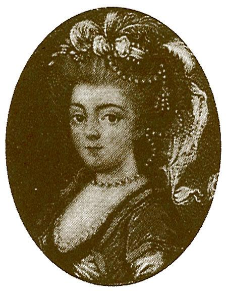

Cortesana

Cortesana, poeta
María Rosa Gálvez de Cabrera
Nacimiento: 14 de agosto de 1768 Málaga, España
Fallecimiento: 2 de octubre de 1806 Madrid, España
María Rosa Gálvez de Cabrera fue una escritora durante la ilustración. Ella fue conocida por su estilo que está caracterizada por feminismo, Neoclasicismo y prerromanticismo.
Punto De Vista
He pensado mucho recientemente sobre el patriotismo. ¿Por qué los artistas que han
viajado regresan con semejante desaprobación por nuestra cultura hogareña? Podemos crear arte
que sea tan alto como el arte de Francia o Italia y podemos hacerlo con nuestro propio estilo.
¡Podemos enseñar, podemos escribir, podemos diseñar! (esa es una palabra que aprendí de una
colega italiano). Mira, podemos aprender de las otras culturas y descubrir nuevas formas de
hablar sobre los problemas que tenemos. Las mujeres tienen problemas similares en todo el mundo
y eso es lo que quiero mostrar a través de mi arte. Puedo usar las formas literarios de artist
as del pasado y reformar esas para este época. No tenemos bastante patriotismo ahora para
unirse todos pero somos una cultura fuerte. Nosotras mujeres somos fuertes y podemos crear
mucho más que creemos. Deseo como mujeres que podamos tener más influencia en la
estandarización de nuestra idioma, pero las personas con poder siguen siendo hombres. Al menos
podemos usar este lenguaje como una herramienta para cambiar nuestras vidas y las vidas de las
personas que nos rodean. Quiero que mi voz se ilumine.
Italianismos
- BAGATELLA > VAGATELA > BAGATELA (1604)
- CAPITANUS > CAPITANU > CAPITANO > CAPITÁN (1729)
- BALCONE > BALCÓN (1726)
- CAPRICCIO > CAPRICHO (1729)
- DISEGNARE > DISEGNAR > DISEÑAR (1780)
- SCHIOPPETTO > SCHOPPETTO > ESCHOPPETTO > ESCOPETA (1732)
- SDRUCCIOLO > SDRUCCOLO > SDRUCCULO > SDRUJULO> ESDRÚJULO (1817)
- STROPPIARE > STROPPIAR> STROPPEAR > ESTROPEAR (1732)
- FESTEGGIARE > FESTEGGIAR > FESTEGGAR> FESTEJAR (1732)
Galicismo
- BUREAU >BURÓ (1837)
- TARTE > TARTA (1739)
- COMMODE > CÓMODA (1780)
Cambios Gramaticales de esta epoca
Un cambio en el uso de los acentos de la preposición a
y las conjunciones y,
e,
o,
u
. En este época, las letras fueron escrito sin acento. Tambien las formas
monosilábicas de verbos como di,
ve,
vi
fueron escrito sin acento.
Política
El centro lingüístico donde la impresoras fueron se cambiado de Seville a Madrid. Fue mucha influencia del francés que fue el centro científico y intelectual y fue mucho valor social en la ciencias y descubrimientos. Este época se llama la ilustración y fue caracterizado por el movimiento filosófico de la creencia en el progreso humano, la habilidad de los humanos para mejorar sus condiciones por sus mismos, la evolución del pensamientos burgués y cosmopolita, también estas creencias:
- Antropocentrismo: todo gira alrededor al ser humano y su razón.
- Racionalismo: Todo se reduce a la razón y la experiencia sensible
- Hipercriticismo: Todo tiene que ser criticado. Especialmente el pasado, lo oscuro, y lo irracional.
- Pragmatismo: Sólo lo útil es merecido.
- Imitación: La originalidad no lleva importancia. Una gran obra es una de imitación de los grandes autores, artistas y arquitectos grecorromanos.
- Idealismo: El buen gusto es el criterio principal. El rechazo de lo vulgar.
- Universalismo: Todos los ilustrados toman una tradición cultural universal con la fuente principal siendo los grecorromanos.
Vocabulario linguistico:
Codificación: el proceso de estandarización y normalización de un idioma
Audio